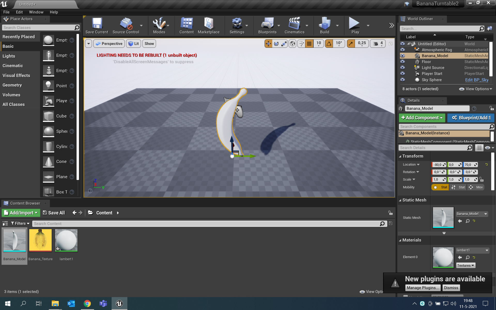
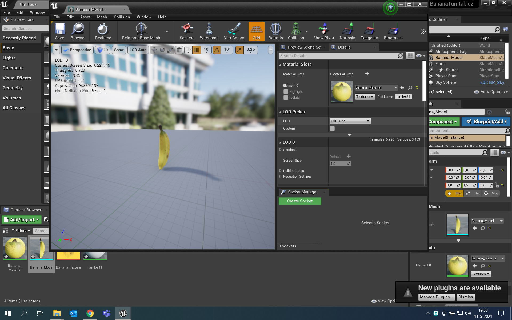
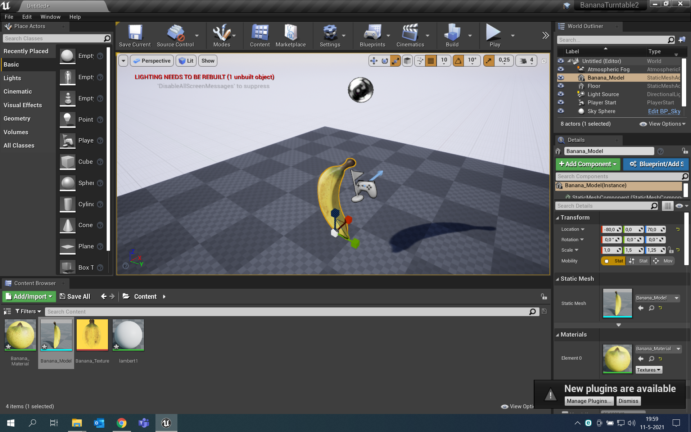
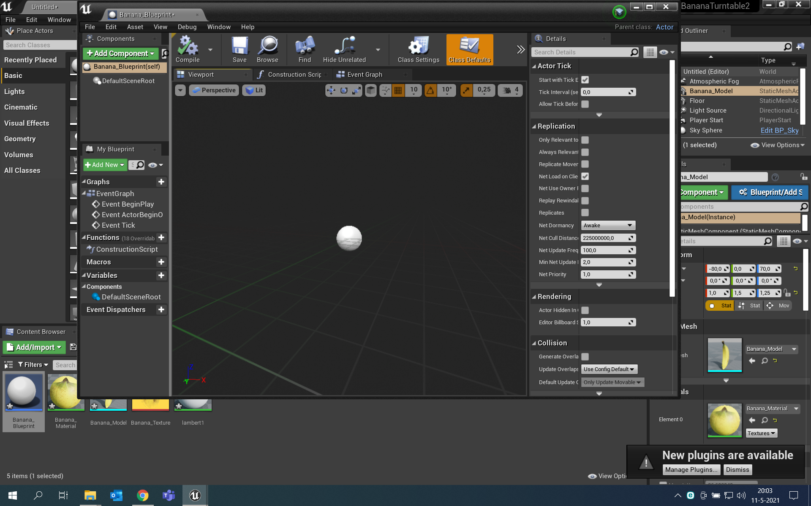
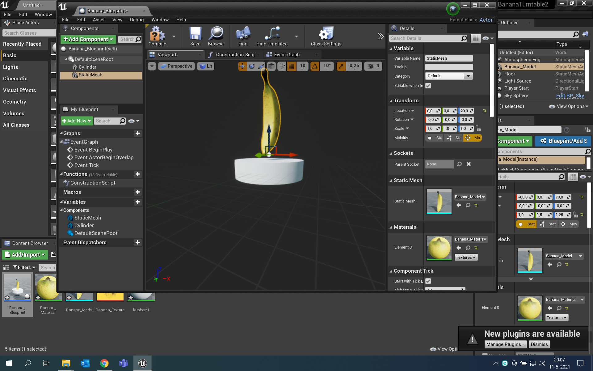

Unreal Engine compulsory assignment
In de volgende schermafbeeldingen is te zien hoe ik de eerste opdrach tvan Unreal Engine heb gedaan, hierbij was het de bedoeling dat we een ronddraaiende banaan gingen maken.
Met de gegeven documenten kon ik een vorm van een banaan in het werkveld slepen.
Daarna heb ik in de material editor de banaan een structuur gegeven die ook in een van de documenten gegeven was.
 Nu kon ik in de blueprint editor een turntable maken zodat de banaan zou roteren.
Hier is de turntable te zien wanneer die af is en de banaan kan gaan ronddraaien.
Unreal Engine additional assignment
In deze opdracht was het de bedoeling om een opzet van een soort game te maken, waarbij je een player had die banaantjes kon verzamelen.
.png)
Ik heb een nieuw project geopend in game mode en daarin een pawn toegevoegd, daarna heb ik volgens de stappen van de pawn een rood vierkant gemaakt, zoals hier te zien.
.png)
.png)
Door weer in de blueprint editor te werken heb ik met verschillende nodes ervoor gezorgd dat het vierkantje verschillende kanten op kan bewegen. Met axis mappings zorg je ervoor dat je toetsen kan aanwijzen die er bijvoorbeeld voor zorgen dat hij links of rechts op kan lopen. Ten slotte heb ik bananen in het veld gesleept die het vierkantje kan oppakken.
AFrame compulsory assignment
Link naar de opdrachten:
https://alenterman.github.io/Aframe/
02 Shape step 6
04 Animations step 7